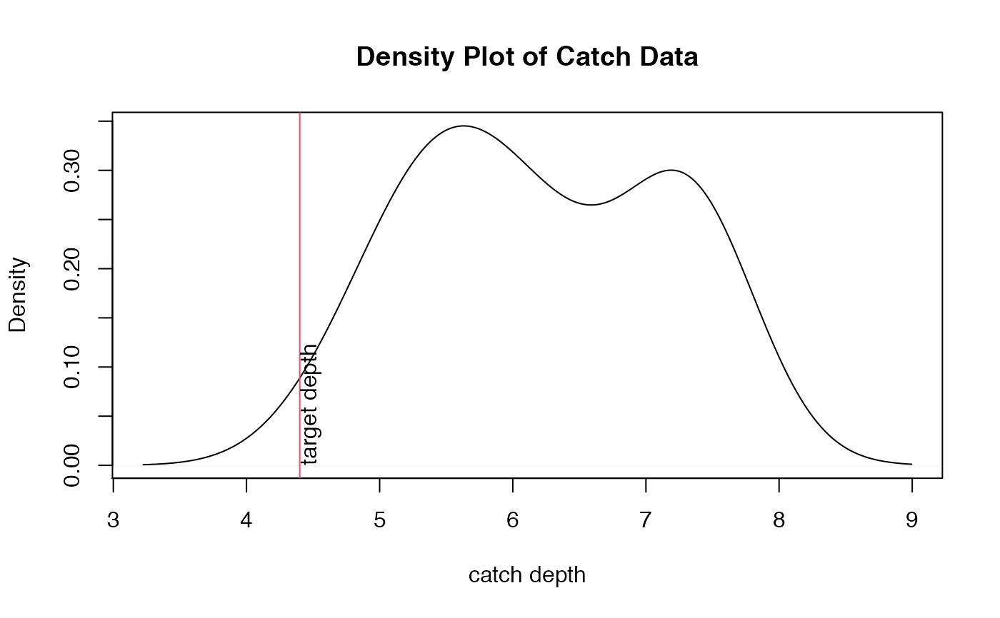
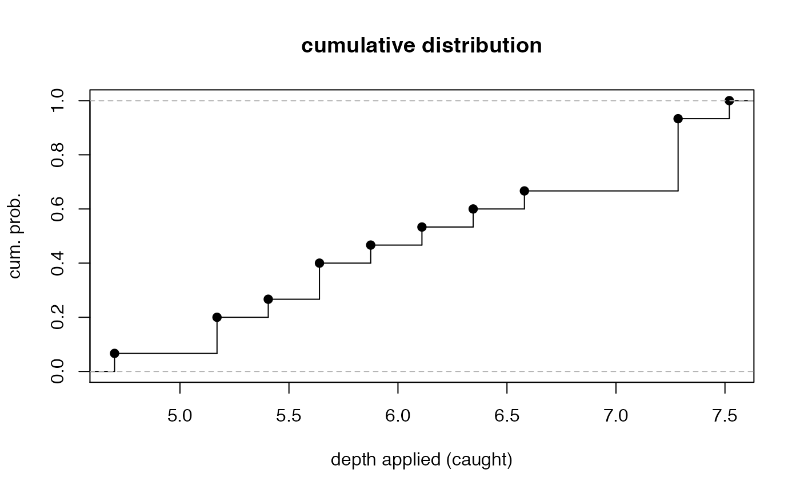
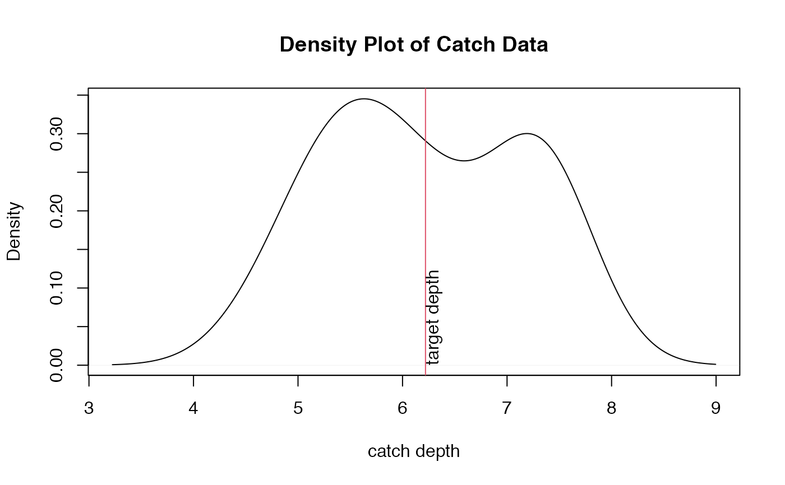
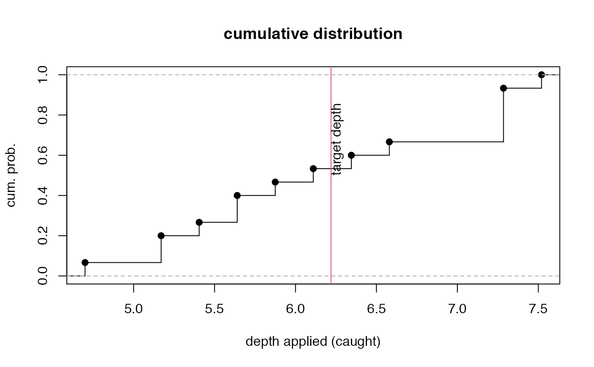

Compute percentiles of area receiving less than and greater than target depth
adper.RdThis returns measures of the percentage (fraction) of areas receiving less or more application than the target depth, assuming catch cans represent approximately equal areas. It also a measure of adequacy and efficiency determined from areas of a density curve receiving amounts equal to or more of the target (adequacy) and less than or equal to target (efficiency).
Arguments
- x
array of catch can depths.
- target
target depth meant to be applied.
- plot
logical; plot density and ecdf plots of depths and target line.
Details
results are given as determined by both a density function and empirical cumulative
distribution function (ecdf). If target is equal to soil moisture depletion, then 1- efficiency is
the percentile of area that loses water to deep percolation (not held in root zone). Adequacy and efficiency (eff) percentiles should add to approximately 1.0. Note that definitions of adequacy and efficiency here based only on percentiles is not a standard definition as deviation from target depth is not considered. See eff for a more traditional approach.
Value
named list, including;
- adequacy.density
percentile receiving >= target amount determined from density curve
- eff.density
percentile receiving <=target amount as determined from density curve
- adequacy.ecdf
same as adequacy.density but as determined from
ecdffunction- eff.ecdf
same as eff.density but as determined from
ecdffunction
Author
Garry Grabow glgrabow@ncsu.edu
Examples
#data from same exercise as PELQ example
x<-c(.23,.31,.24,.24,.28,.31,.27,.22,.26,.31,
.31,.25,.20,.22,.32)# catch can depths in inches caught during 1.0 hr. test
x<-x*23.5 # extend to 23.5 hour irrigation
target<-4.4 # replace soil water deficit of 4.4 in.
adper(x,target)


#> [[1]]
#> [1] "adequacy.density="
#>
#> [[2]]
#> [1] 0.9714638
#>
#> [[3]]
#> [1] "eff.density="
#>
#> [[4]]
#> [1] 0.02853622
#>
#> [[5]]
#> [1] "adequacy.ecdf="
#>
#> [[6]]
#> [1] 1
#>
#> [[7]]
#> [1] "eff.ecdf="
#>
#> [[8]]
#> [1] 0
#>
#change target to average catch
target2<-mean(x)
adper(x,target2)


#> [[1]]
#> [1] "adequacy.density="
#>
#> [[2]]
#> [1] 0.4842988
#>
#> [[3]]
#> [1] "eff.density="
#>
#> [[4]]
#> [1] 0.5157012
#>
#> [[5]]
#> [1] "adequacy.ecdf="
#>
#> [[6]]
#> [1] 0.4666667
#>
#> [[7]]
#> [1] "eff.ecdf="
#>
#> [[8]]
#> [1] 0.5333333
#>